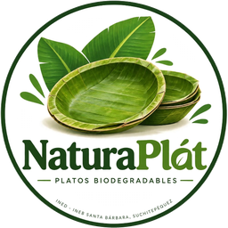
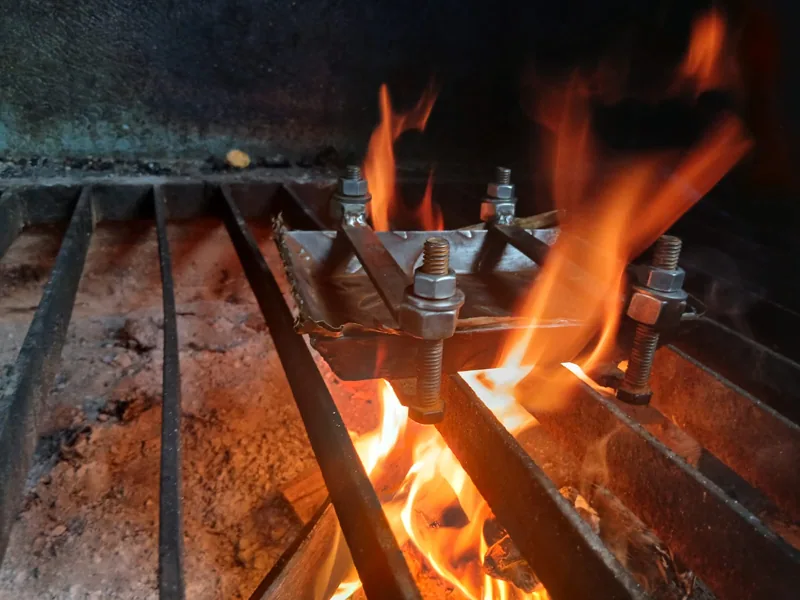
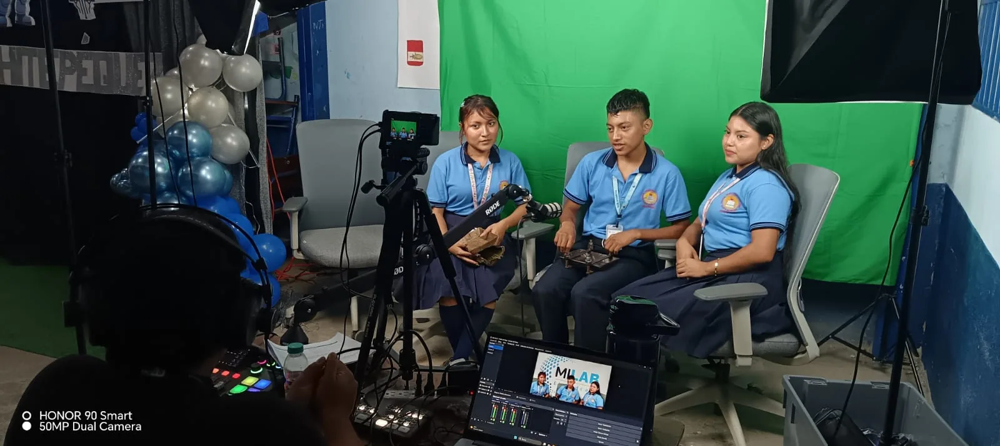
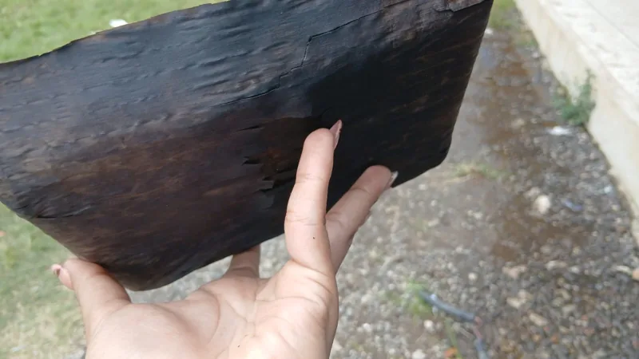

Producto terminado
NaturaPlát 14 × 20
Plato rectangular de 14 cm de ancho por 20 cm de largo, prensado a mano con hoja de plátano. Para sólidos, parrilladas y catering.

NaturaPlátMILAB · INED Santa Bárbara · Suchitepéquez
Vajilla biodegradable de hoja de plátano. Resistentes en la mesa, compostables en semanas y sin una gota de plástico.
Demostración del proyecto MILAB: los pedidos y mensajes no se procesan.

Producto · 01
Un solo plato, prensado a mano. Mide 14 cm de ancho por 20 cm de largo.
Producto terminado
Plato rectangular de 14 cm de ancho por 20 cm de largo, prensado a mano con hoja de plátano. Para sólidos, parrilladas y catering.
Proceso · 02
La presentación se construyó con registro audiovisual, sesión de producto y revisión de fuentes.



Cada cifra de esta presentación tiene una fuente numerada.
Demostración: no se procesa ningún pago ni se envía correo real.
TotalQ0